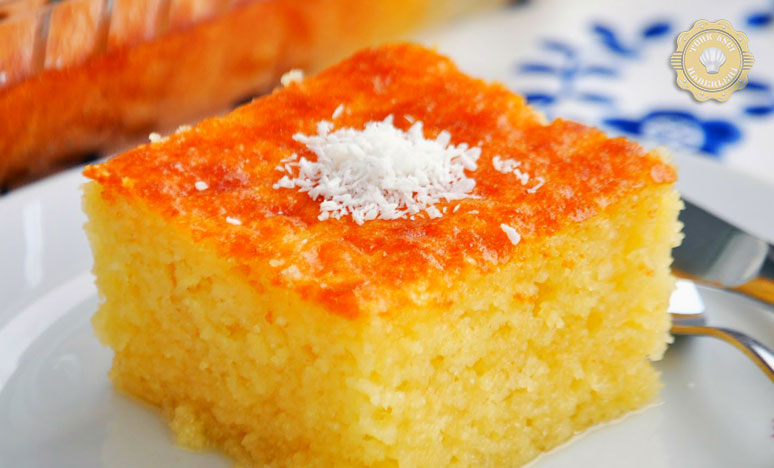

...Revani...
Şerbetli tatlılar içerisinde en çok tercih edileni Revani Tatlısı olabilir diye düşünüyorum. Bu özel lezzet Osmanlı Mutfağından Revani günümüze kadar gelmiş ve hemen hemen herkesin zevkle yediği bir tatlı olmuştur.Verilecek tarif doğru uygulandığı taktirde pişman olmayacaksınız.Afiyet olsunTarif :Elif Atalar
